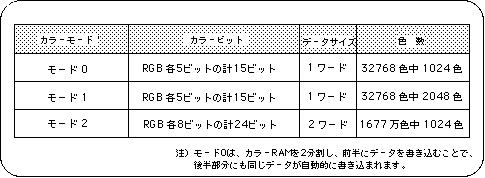
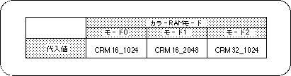

Return to previous page | Return to menu | Go to next page
Color RAM is used for all color control of palette-type sprites and scroll screens. Color data is composed of 5 bits or 8 bits for each RGB color, depending on the color RAM mode. There are three color RAM modes as shown in the following table.

Note) In mode 0, the color RAM is divided into two and data is written to the first half, so the same data is automatically written to the second half.
The color RAM mode is represented by the following image in the actual color RAM.

Color RAM mode is selected and used in the following cases.
Color RAM mode 0: Used when using the extended color calculation function. Color RAM mode 1: Use when you want to use 2048 colors out of 32768 colors. Color RAM mode 2: Use when you want to use 2048 colors out of 16.77 million colors.
In color RAM mode 0, as can be seen from Figure 8-8, the color RAM area is divided into two banks, and the same color data is stored in each bank. For this reason, the number of colors that can be used is halved compared to color RAM mode 1, but the extended color calculation function can be used instead.
However, this SGL library function does not support the extended color calculation mode.
Caution
To use the extended color calculation mode, refer to “HARDWARE MANUAL vol.2”.
The difference between Mode 1 and Mode 2 is the number of colors that can be used.
Mode 1 can use 2048 colors from 32768 colors, and Mode 2 can use 1024 colors from 16.77 million colors.
For this reason, mode 1 can use a larger number of colors than mode 2, but since the data length of the color data is shorter than mode 2, the color stages that can be selected are roughly compared to mode 2. Become.
On the other hand, in Mode 2, the maximum number of colors that can be used at one time is half that in Mode 1, but since the data length that makes up the color data is longer than that in Mode 1, deeper gradations can be used.
To set the color RAM mode, use the library function “slColRAMMode”.

Note) 2048 colors can be used only when color RAM mode 1 is selected.
The color RAM at system initialization is set to mode 1.